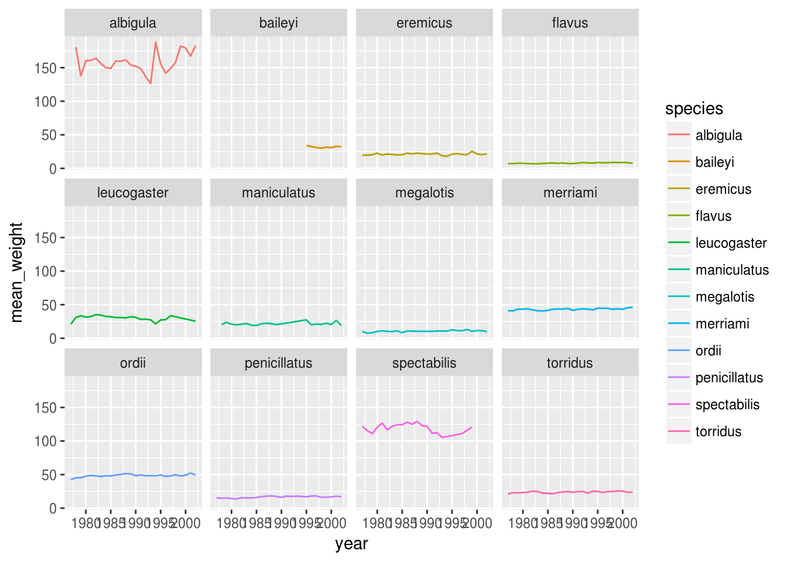

Tidying and exporting data, reproducing figures
Lecture objectives
- Learn about tidy data.
- Transform data from the long to wide format.
- Reproduce existing figures from raw data.
- Understand which raw data is underlying a figure.
- Understand which types of figures are suitable to create from raw data.
- Explore scientific questions using dplyr and ggplot.
Lecture outline
- Reshaping with gather and spread (25 min)
- Exporting data (15 min)
- Reproducing figures (50 min)
Setting up
Start by loading the required packages. Both ggplot2 and dplyr are included in the tidyverse package collection.
# Install if needed
# install.packages('tidyverse')
library(tidyverse)Load the data we saved in the previous lesson.
# Download if needed
# download.file("https://ndownloader.figshare.com/files/2292169", "portal_data.csv")
surveys <- read_csv('portal_data.csv')## Parsed with column specification:
## cols(
## record_id = col_integer(),
## month = col_integer(),
## day = col_integer(),
## year = col_integer(),
## plot_id = col_integer(),
## species_id = col_character(),
## sex = col_character(),
## hindfoot_length = col_integer(),
## weight = col_integer(),
## genus = col_character(),
## species = col_character(),
## taxa = col_character(),
## plot_type = col_character()
## )surveys## # A tibble: 34,786 x 13
## record_id month day year plot_id species_id sex hindfoot_length
## <int> <int> <int> <int> <int> <chr> <chr> <int>
## 1 1 7 16 1977 2 NL M 32
## 2 72 8 19 1977 2 NL M 31
## 3 224 9 13 1977 2 NL <NA> NA
## 4 266 10 16 1977 2 NL <NA> NA
## 5 349 11 12 1977 2 NL <NA> NA
## 6 363 11 12 1977 2 NL <NA> NA
## 7 435 12 10 1977 2 NL <NA> NA
## 8 506 1 8 1978 2 NL <NA> NA
## 9 588 2 18 1978 2 NL M NA
## 10 661 3 11 1978 2 NL <NA> NA
## # ... with 34,776 more rows, and 5 more variables: weight <int>,
## # genus <chr>, species <chr>, taxa <chr>, plot_type <chr>Reshaping with gather and spread
dplyr is one part of a larger tidyverse that enables you to work with data in tidy data formats. tidyr enables a wide range of manipulations of the structure data itself. For example, the survey data presented here is almost in what we call a long format - every observation of every individual is its own row. This is an ideal format for data with a rich set of information per observation. It makes it difficult, however, to look at the relationships between measurements across plots. For example, what is the relationship between mean weights of different genera across the entire data set?
To answer that question, we’d want each plot to have a single row, with all of the measurements in a single plot having their own column. This is called a wide data format. For the surveys data as we have it right now, this is going to be one heck of a wide data frame! However, if we were to summarize data within plots and species, we might begin to have some relationships we’d want to examine.
Let’s see this in action. First, using dplyr, let’s create a data frame with the mean body weight of each genus by plot.
surveys_gw <- surveys %>%
filter(!is.na(weight)) %>%
group_by(genus, plot_id) %>%
summarize(mean_weight = mean(weight))
head(surveys_gw)## # A tibble: 6 x 3
## # Groups: genus [1]
## genus plot_id mean_weight
## <chr> <int> <dbl>
## 1 Baiomys 1 7.000000
## 2 Baiomys 2 6.000000
## 3 Baiomys 3 8.611111
## 4 Baiomys 5 7.750000
## 5 Baiomys 18 9.500000
## 6 Baiomys 19 9.533333Long to Wide with spread
Now, to make this long data wide, we use spread from tidyr to spread out the different taxa into columns. spread takes three arguments: - the data, the key column (or column with identifying information), the values column (the one with the numbers/values). We’ll use a pipe so we can ignore the data argument.
surveys_gw_wide <- surveys_gw %>%
spread(genus, mean_weight)
head(surveys_gw_wide)## # A tibble: 6 x 11
## plot_id Baiomys Chaetodipus Dipodomys Neotoma Onychomys Perognathus
## <int> <dbl> <dbl> <dbl> <dbl> <dbl> <dbl>
## 1 1 7.000000 22.19939 60.23214 156.2222 27.67550 9.625000
## 2 2 6.000000 25.11014 55.68259 169.1436 26.87302 6.947368
## 3 3 8.611111 24.63636 52.04688 158.2414 26.03241 7.507812
## 4 4 NA 23.02381 57.52454 164.1667 28.09375 7.824427
## 5 5 7.750000 17.98276 51.11356 190.0370 27.01695 8.658537
## 6 6 NA 24.86009 58.60531 179.9333 25.89947 7.809524
## # ... with 4 more variables: Peromyscus <dbl>, Reithrodontomys <dbl>,
## # Sigmodon <dbl>, Spermophilus <dbl>Notice that some genera have NA values. That’s because some of those genera don’t have any record in that plot. Sometimes it is fine to leave those as NA. Sometimes we want to fill them as zeros, in which case we would add the argument fill=0.
surveys_gw %>%
spread(genus, mean_weight, fill = 0) %>%
head## # A tibble: 6 x 11
## plot_id Baiomys Chaetodipus Dipodomys Neotoma Onychomys Perognathus
## <int> <dbl> <dbl> <dbl> <dbl> <dbl> <dbl>
## 1 1 7.000000 22.19939 60.23214 156.2222 27.67550 9.625000
## 2 2 6.000000 25.11014 55.68259 169.1436 26.87302 6.947368
## 3 3 8.611111 24.63636 52.04688 158.2414 26.03241 7.507812
## 4 4 0.000000 23.02381 57.52454 164.1667 28.09375 7.824427
## 5 5 7.750000 17.98276 51.11356 190.0370 27.01695 8.658537
## 6 6 0.000000 24.86009 58.60531 179.9333 25.89947 7.809524
## # ... with 4 more variables: Peromyscus <dbl>, Reithrodontomys <dbl>,
## # Sigmodon <dbl>, Spermophilus <dbl>We can now do things like plot the weight of Baiomys against Chaetodipus or examine their correlation.
surveys_gw %>%
spread(genus, mean_weight, fill = 0) %>%
cor(use = "pairwise.complete")## plot_id Baiomys Chaetodipus Dipodomys
## plot_id 1.0000000 -0.11041371 0.2945925 -0.165214440
## Baiomys -0.1104137 1.00000000 0.3687496 -0.050774964
## Chaetodipus 0.2945925 0.36874958 1.0000000 0.325918149
## Dipodomys -0.1652144 -0.05077496 0.3259181 1.000000000
## Neotoma -0.5505067 -0.03268885 -0.2764929 0.121595440
## Onychomys -0.4805452 -0.08689875 -0.3254973 0.093274704
## Perognathus 0.2468167 0.16572228 0.1799742 0.134225846
## Peromyscus -0.3042821 0.10570094 0.2109187 0.219996783
## Reithrodontomys -0.2693462 0.34710430 -0.2258934 -0.142993836
## Sigmodon 0.2745083 -0.01421689 0.1971181 -0.092613012
## Spermophilus 0.1342651 -0.05423613 -0.3096137 -0.003720851
## Neotoma Onychomys Perognathus Peromyscus
## plot_id -0.55050668 -0.48054516 0.2468167 -0.3042821
## Baiomys -0.03268885 -0.08689875 0.1657223 0.1057009
## Chaetodipus -0.27649287 -0.32549730 0.1799742 0.2109187
## Dipodomys 0.12159544 0.09327470 0.1342258 0.2199968
## Neotoma 1.00000000 0.43466237 -0.2562367 0.3072292
## Onychomys 0.43466237 1.00000000 -0.1929882 0.1146881
## Perognathus -0.25623672 -0.19298820 1.0000000 0.1813099
## Peromyscus 0.30722919 0.11468812 0.1813099 1.0000000
## Reithrodontomys 0.31713778 -0.03186637 -0.2796847 0.2924641
## Sigmodon 0.04665664 -0.19977238 -0.2493341 0.1562804
## Spermophilus -0.14037233 0.37939827 0.1057038 -0.1593698
## Reithrodontomys Sigmodon Spermophilus
## plot_id -0.26934622 0.27450825 0.134265067
## Baiomys 0.34710430 -0.01421689 -0.054236130
## Chaetodipus -0.22589344 0.19711806 -0.309613679
## Dipodomys -0.14299384 -0.09261301 -0.003720851
## Neotoma 0.31713778 0.04665664 -0.140372334
## Onychomys -0.03186637 -0.19977238 0.379398267
## Perognathus -0.27968468 -0.24933409 0.105703800
## Peromyscus 0.29246412 0.15628042 -0.159369768
## Reithrodontomys 1.00000000 0.16463343 -0.217470366
## Sigmodon 0.16463343 1.00000000 -0.270401476
## Spermophilus -0.21747037 -0.27040148 1.000000000Wide to long with gather
What if we had the opposite problem, and wanted to go from a wide to long format? For that, we use gather to sweep up a set of columns into one key-value pair. We give it the arguments of a new key and value column name, and then we specify which columns we either want or do not want gathered up. So, to go backwards from surveys_gw_wide, and exclude plot_id from the gathering, we would do the following:
surveys_gw_long <- surveys_gw_wide %>%
gather(genus, mean_weight, -plot_id)
head(surveys_gw_long)## # A tibble: 6 x 3
## plot_id genus mean_weight
## <int> <chr> <dbl>
## 1 1 Baiomys 7.000000
## 2 2 Baiomys 6.000000
## 3 3 Baiomys 8.611111
## 4 4 Baiomys NA
## 5 5 Baiomys 7.750000
## 6 6 Baiomys NANote that now the NA genera are included in the long format. Going from wide to long to wide can be a useful way to balance out a dataset so every replicate has the same composition.
We could also have used a specification for what columns to include. This can be useful if you have a large number of identifying columns, and it’s easier to specify what to gather than what to leave alone. And if the columns are sequential, we don’t even need to list them all out - just use the : operator!
surveys_gw_wide %>%
gather(genus, mean_weight, Baiomys:Spermophilus) %>%
head()## # A tibble: 6 x 3
## plot_id genus mean_weight
## <int> <chr> <dbl>
## 1 1 Baiomys 7.000000
## 2 2 Baiomys 6.000000
## 3 3 Baiomys 8.611111
## 4 4 Baiomys NA
## 5 5 Baiomys 7.750000
## 6 6 Baiomys NAChallenge
Make a wide data frame with
yearas columns,plot_idas rows, and the values are the number of genera per plot. You will need to summarize before reshaping, and use the functionn_distinctto get the number of unique types of a genus. It’s a powerful function! See?n_distinctfor more.Now take that data frame, and make it long again, so each row is a unique
plot_id-yearcombination.The
surveysdata set is not truly wide or long because there are two columns of measurement -hindfoot_lengthandweight. This makes it difficult to do things like look at the relationship between mean values of each measurement per year in different plot types. Let’s walk through a common solution for this type of problem. First, usegatherto create a truly long dataset where we have a key column calledmeasurementand avaluecolumn that takes on the value of eitherhindfoot_lengthorweight. Hint: You’ll need to specify which columns are being gathered.With this new truly long data set, calculate the average of each
measurementin eachyearfor each differentplot_type. Thenspreadthem into a wide data set with a column forhindfoot_lengthandweight. Hint: Remember, you only need to specify the key and value columns forspread.
Exporting data
Now that you have learned how to use dplyr to extract information from or summarize your raw data, you may want to export these new datasets to share them with your collaborators or for archival.
Similar to the read_csv() function used for reading CSV files into R, there is a write_csv() function that generates CSV files from data frames.
Before using write_csv(), we are going to create a new folder, data-processed, in our working directory that will store this generated dataset. We don’t want to store manipulated datasets in the same directory as our raw data. It’s good practice to keep them separate. The raw data would ideally be put in a data-raw folder, which should only contain the raw, unaltered data, and should be left alone to make sure we don’t delete or modify it from how it was when we downloaded or recorded it ourself. In contrast, our R code will create the contents of the data-processed directory, so even if the files it contains are deleted, we can always re-generate them.
Use the getwd() function to find out which is the current working directory.
getwd()## [1] "/home/travis/build/UofTCoders/rcourse"Navigate to this directory in your file browser and create a folder called data-processed.
Alternatively, you could use R to create this directory.
dir.create("data-processed")
# To suppress the warning, we could do
dir.create("data-processed", showWarnings = FALSE)
# Another alternative would be to use a conditional expression, which only
# creates the directory *if* it does not already exist. The syntax here is
# similar to the for loop we created in the second lecture.
if (!dir.exists('data-processed')) {
dir.create("data-processed")
}We are going to prepare a cleaned up version of the data without NAs. Let’s start by removing observations for which the species_id is missing. Let’s also remove observations for which weight and the hindfoot_length are missing. This dataset should also only contain observations of animals for which the sex has been determined:
surveys_complete <- surveys %>%
filter(!is.na(species_id), # remove missing species_id
!is.na(weight), # remove missing weight
!is.na(hindfoot_length), # remove missing hindfoot_length
!is.na(sex)) # remove missing sex
# This expression is a succinct alternative to the above
surveys_complete_comcas <- surveys %>%
filter(complete.cases(species_id, weight, hindfoot_length, sex))
# This is even briefer, but omits observations with NA in *any* column.
# There is no way to control which columns to use, but it is common to want
# to exclude all NAs, which in our case corresponds to the columns listed above.
surveys_complete_naomit <- na.omit(surveys)
# Compare the dimensions of the original and the cleaned data frame
dim(surveys)## [1] 34786 13dim(surveys_complete)## [1] 30676 13dim(surveys_complete_comcas)## [1] 30676 13dim(surveys_complete_naomit)## [1] 30676 13Now that our dataset is ready, we can save it as a CSV file in our data-processed folder.
write_csv(surveys_complete, path = "data-processed/surveys_complete.csv")Team Challenges
These are four exercises in exploratory data analyses, which will train you to think about data and to use the tools you have been learning about in this class to solve scientific questions and to reproduce figures from the literature. To solve these challenges, you will need to understand what data underlies a figure and how you need to manipulate it to recreate the figure.
Setting up
Start by loading the required packages. Both ggplot2 and dplyr are included in the tidyverse package collection.
# Install if needed
# install.packages('tidyverse')
library(tidyverse)1. Explore the weight and hindfoot trends further
Load the data we saved in the previous lesson.
# Download if needed
# download.file("https://ndownloader.figshare.com/files/2292169", "data/portal_data.csv")
surveys <- read_csv('portal_data.csv')## Parsed with column specification:
## cols(
## record_id = col_integer(),
## month = col_integer(),
## day = col_integer(),
## year = col_integer(),
## plot_id = col_integer(),
## species_id = col_character(),
## sex = col_character(),
## hindfoot_length = col_integer(),
## weight = col_integer(),
## genus = col_character(),
## species = col_character(),
## taxa = col_character(),
## plot_type = col_character()
## )surveys## # A tibble: 34,786 x 13
## record_id month day year plot_id species_id sex hindfoot_length
## <int> <int> <int> <int> <int> <chr> <chr> <int>
## 1 1 7 16 1977 2 NL M 32
## 2 72 8 19 1977 2 NL M 31
## 3 224 9 13 1977 2 NL <NA> NA
## 4 266 10 16 1977 2 NL <NA> NA
## 5 349 11 12 1977 2 NL <NA> NA
## 6 363 11 12 1977 2 NL <NA> NA
## 7 435 12 10 1977 2 NL <NA> NA
## 8 506 1 8 1978 2 NL <NA> NA
## 9 588 2 18 1978 2 NL M NA
## 10 661 3 11 1978 2 NL <NA> NA
## # ... with 34,776 more rows, and 5 more variables: weight <int>,
## # genus <chr>, species <chr>, taxa <chr>, plot_type <chr>Let’s recreate the survey data set we used in lecture 4, only containing the most abundant species (those with > 800 observations).
abundant_species <- surveys %>%
filter(!is.na(hindfoot_length) & !is.na(weight)) %>%
group_by(species) %>%
tally() %>%
arrange(desc(n)) %>%
filter(n > 800) %>%
select(species)
surveys_abun_species <- surveys %>%
filter(!is.na(hindfoot_length) &
!is.na(weight) &
species %in% abundant_species$species)
# If everything loaded correctly, the dimensions of your data set should be
# 30,320 rows x 13 columns. We could check this by displaying the entire data
# set with `surveys_abun_species`, but also more directly by comparing the
# dimensions of the data set to those listed above.
dim(surveys_abun_species) == c(30320, 13)## [1] TRUE TRUE# Remember that `==` is for comparisons, and `=` is for assigning arguments in
# function calls.In the second question in the last challenge of lecture 4, we saw that the average weight of all the animals decreased over time, while the average weight for each species remained constant. Here are those plots again.
surveys_abun_species %>%
filter(!is.na(weight)) %>%
group_by(year) %>%
summarize(mean_weight = mean(weight)) %>%
ggplot(aes(x = year, y = mean_weight)) +
geom_line()
surveys_abun_species %>%
filter(!is.na(weight)) %>%
group_by(year, species) %>%
summarize(mean_weight = mean(weight)) %>%
ggplot(aes(x = year, y = mean_weight, color = species)) +
geom_line() +
facet_wrap(~ species)
If you were to look at the average hindfoot length over time, you would find that the trends are similar to those of the average weight. Can you find an explanation for why both the average hindfoot length and the average weight decrease over time for all animals’ average weight, but remain constant when looking at individual species? Phrased another way: since each species displays constant weight and hindfoot_length measures over time, what could be the cause of the notable decrease over time for the average weight of all species pooled together?
2. Reproduce figure 3 from the paper
For this section, you will apply your data wrangling and plotting skills to reproduce a couple of figures from a study on the yearly change in biomass of plants in the Abisko national park in northern Sweden. This paper is publish under an open license and the figures can be accessed via this link.
You will be working with this dataset in assignment 3, so we have prepared the data for you in a format that is easier to work with. Download the data and read it into a dataframe called plant_biomass. Confirm that the data frame is 180 rows by 10 columns
Reproduce figure 3 from the paper. Focus on the overall message on the plot, i.e. two panels for different habitats of the plant biomass over the year in grazed controls vs rodent exclosures. You do not need to get the figure aesthetics to look exactly the same as in the published figures (i.e. no need for the exact colors and shapes, axis styles, or to include the small dots around the main lines).
3. Reproduce figure 4 from the paper
Use the plant_biomass data set and reproduce figure 4 from the paper.
Hints:
- To get the right dimensions of the subplots, explore how to use the function
facet_gridinstead offacet_wrap. - Remember to search online for help, e.g. “How do I change the figure size in R markdown?”
- You will also need to search online or in the R documentation to find out how you change the y-scale to be constant within a species, but not between species (as in the paper figure).
4. Make figure 3 perfect
Let’s try to bring figure 3 closer to the paper version. Use the R documentation and search online to find out how to:
- Change the size of markers in your plots and adjust them appropriately.
- Slightly adjust the thickness of the lines.
- Change the colors of the lines to match those online.
- Apply a ggplot theme to make the figure background white and the overall figure appearance more like the paper version.
- Change the x and y label to match the paper figure.
Parts of this lesson material were taken and modified from Data Carpentry under their CC-BY copyright license. See their lesson page for the original source.
This work is licensed under a Creative Commons Attribution 4.0 International License. See the licensing page for more details about copyright information.